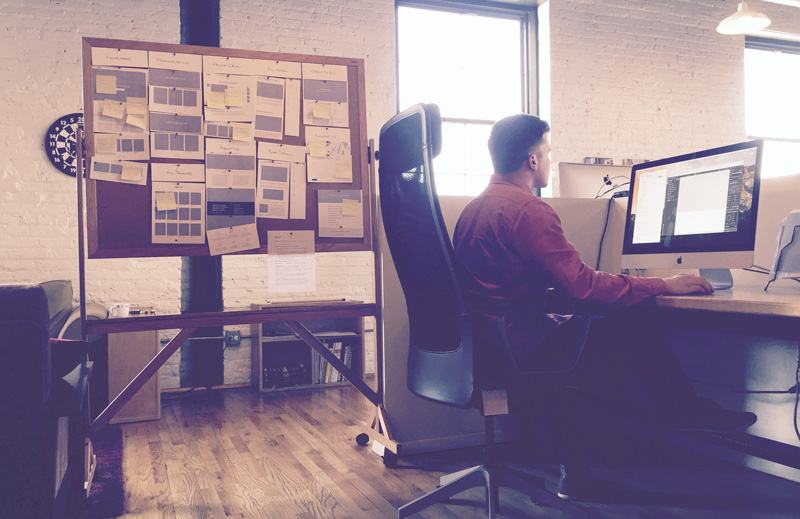

This is some text inside of a div block.

This is some text inside of a div block.
Art Direction
Web & Interactive Design
UI/UX Design
CMS Development
Front- and back-end Development
Responsive/Mobile App Design
Experience

I started designing for the web in 1999 when I was 14. Since then, I’ve joined a startup, a Fortune 500 consulting firm, one of the largest natural history museums in the world and an advertising/marketing agency.
This website is a collection of work completed during that time. Some were a collaborative effort between myself and a team of creative directors, designers, developers and account executives. There are others that I completed independently, from initial sketches and concepts, wireframes, user experience, user interface design, prototyping, front- and back-end development, to site migration and production.
This website is a collection of work completed during that time. Some were a collaborative effort between myself and a team of creative directors, designers, developers and account executives. There are others that I completed independently, from initial sketches and concepts, wireframes, user experience, user interface design, prototyping, front- and back-end development, to site migration and production.